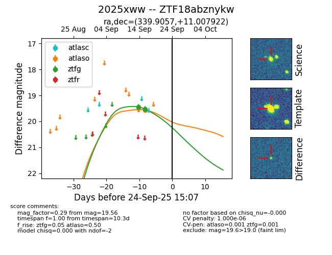
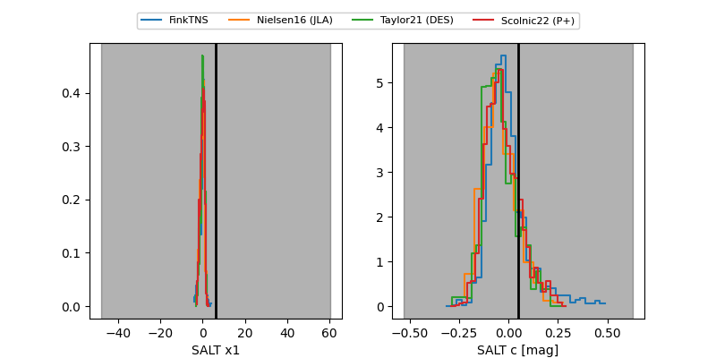

FINK: ZTF18abznykw
Lasair: ZTF18abznykw
ALeRCE: ZTF18abznykw
TNS: 2025xww
YSE: 2025xww
ZTF18abznykw (ztf,fink)
2025xww (tns,yse)
equatorial (ra, dec) = (339.9057,+11.00792)
galactic (l, b) = (78.5458,-40.23991)


last atlaso=19.56, ztfg=19.53
1 atlaso, 2 ztfg detections